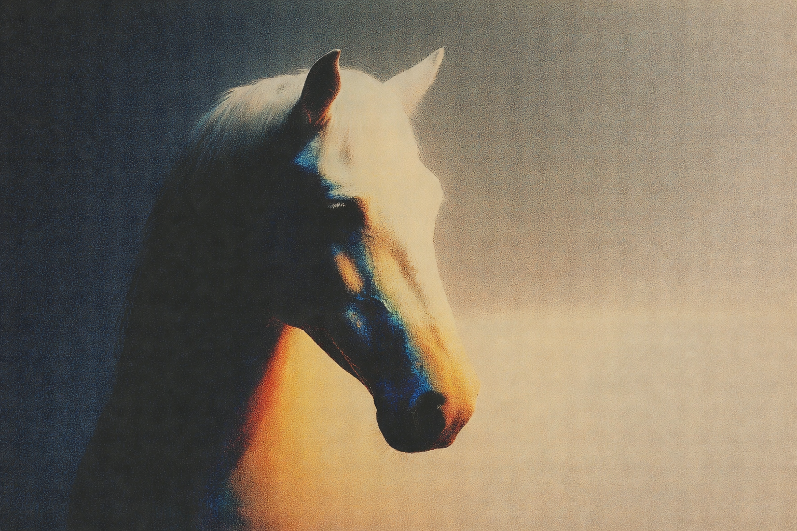

“A fragile human outside.
A horse inside.”
Eleven years of learning trust from horses — and from one black stallion who changed everything.
ENTER THE STORYI have lived eleven years among horses. Still, the world feels too small for me everywhere except in their shadow. Ordinary. Quiet. A heart that races—never quite falling below 120—like a drum that forgot how to rest.
Shame has been my oldest companion, a low fog that clings to the skin. Disgust—first from voices outside, then echoing inside—has trailed me like dust after a long ride. I never quite fit in the places where people gather. I only ever felt the air become breathable when a horse stood near, ears flicking, eyes soft, breathing the same slow rhythm as the wind through dry grass.
For the first seven or eight years, I trained as though perfection could save me. Head high. Steps even. Response immediate. I was never brutal, never raised a hand in anger. But there was always a hidden tension in my fingers—the need to make the horse correct, to prove something, to shape the moment into something flawless. The horses obeyed, mostly. Yet they never melted. They never turned toward me when the work was done. They never sought the curve of my shoulder or the open cradle of my palms. Something was always held back.
Then, three or four years ago, the black stallion walked into my days. He arrived wearing no mask, no fear—nothing but quiet excitement, vigilance, and curiosity to explore, like a second coat of rawness and unfiltered truth. He wasn’t stubborn, but he made me realize how I wanted to be treated, and everything began to change.
One wild leap of panic, and he dragged me across the earth. Not cruelty—only terror. The dread that he might be harmed fell across my own dread: the pounding heart, the shame that felt eternal, the loneliness of being ordinary and wrong and unseen. In that breathless instant, I could have tightened my grip, shouted, or forced obedience. Instead, the old exhaustion rose and whispered: no more.
I was tired of shaping, tired of the quiet force that had lived inside every correction. I wanted to be met with patience, with gentleness, with a presence that never demanded or wounded. I was still trying to find a way to handle him, unaware that I was already handling him correctly.